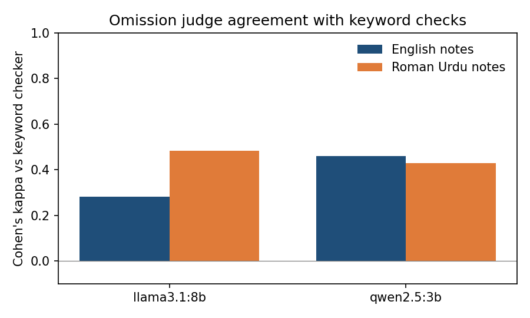

Experiment · Clinical AI · Evaluation
A small local AI checked clinic notes for missing facts. It caught lost urgency, and passed two missing red flags
A published method uses GPT-4 to find what a medical summary left out. A clinic that keeps data on its own computers cannot do that, so I tried two small local models on my own notes.
By Muzammal Hussain · 1 November 2026 · 4 min read
MED-OMIT, from Schumacher and colleagues, splits a doctor-patient conversation into facts and asks GPT-4, one fact at a time, whether each one made it into the summary. It then weights every missing fact by how much it matters for a diagnosis. My 20-consultation benchmark already had 80 physiotherapy notes and a keyword checker. Here I asked whether qwen2.5:3b or llama3.1:8b, running locally, can do the GPT-4 part.
Key findings
- Agreement with the keyword checker was moderate. Cohen's kappa was 0.43 to 0.48 on notes drafted from Roman Urdu and 0.28 to 0.46 on English notes, where very few facts were missing at all.
- The judge caught what keywords cannot. For a possible blood clot, the notes said "hospital" but never "today" or "urgent". The keywords passed it; the judge called it missing.
- The judge also hid two red flags. A Roman Urdu note never mentioned numbness or urine problems, both critical answers, and the qwen2.5:3b judge marked both as present.
- Roman Urdu notes still scored worse with every checker, but the size of the gap changed with the checker.
What I did
No new notes were written. I reused the 80 notes from the benchmark: 20 fictional consultations I wrote, each drafted from English and from Roman Urdu by qwen2.5:3b and llama3.1:8b. Each case has a list of facts I wrote, 168 in total and 68 marked critical. Each judge got one note and its numbered fact list and had to answer "present" or "missing" for every fact in JSON. Both ran through Ollama on a MacBook M4 (16 GB) at temperature 0. All 1,344 judgements parsed.
Neither the judge nor the keyword checker is ground truth, so I compared them fact by fact and then read some of the disagreements myself.
Results

| Judge | Notes from | Agreement | Kappa | Missing (keywords) | Missing (judge) | Only judge | Only keywords |
|---|---|---|---|---|---|---|---|
| qwen2.5:3b | English | 96.7% | 0.46 | 7 | 14 | 9 | 2 |
| qwen2.5:3b | Roman Urdu | 81.2% | 0.43 | 66 | 73 | 35 | 28 |
| llama3.1:8b | English | 95.8% | 0.28 | 7 | 13 | 10 | 4 |
| llama3.1:8b | Roman Urdu | 83.3% | 0.48 | 66 | 70 | 30 | 26 |
Each row covers 336 facts from 40 notes. The 96% agreement on English notes is misleading: only 7 facts were missing by keywords, so a checker that always said "present" would also agree about 98% of the time. Kappa removes that luck. On Roman Urdu notes the judges flagged about as many facts as the keywords did, but largely different ones.
With MED-OMIT's weights (1 for a critical fact, 0.1 for any other), qwen2.5:3b's Roman Urdu notes averaged 1.42 weighted omissions by keywords against 0.03 for its English notes. The qwen2.5:3b judge gave 0.96 against 0.10, and the llama3.1:8b judge 0.75 against 0.12. Every checker sees the gap; they disagree on its size.
What the disagreements showed
I read 10 of the 144 disagreements against the notes.
| Case | What the note said | Keywords | Judge |
|---|---|---|---|
| Possible DVT after knee replacement | "referred to the hospital", no today or urgent | present | missing (right) |
| Possible scaphoid fracture | "refer for an X-ray", no today | present | missing (right) |
| Tendon risk from an antibiotic | "Inform GP about potential tendon effect of ciprofloxacin" | present (right) | missing |
| Twisted knee, from Roman Urdu | patient said it swelled; note says "There is no swelling" | present | missing |
| Back pain red flags, from Roman Urdu | numbness and urine problems never mentioned | missing (right) | present |
The swelling case is not really an omission. The note says the opposite of what the patient said, and the keyword "swell" let it pass. MED-OMIT has no label for a fact stated wrongly either, which matters because wrong details, like the wrong side or the wrong joint, were the most common Roman Urdu error in my benchmark.
The red-flag case worries me most. Numbness in the saddle area and trouble passing urine can mean cauda equina, an emergency, so the note must show that the physiotherapist asked. A judge that marks those answers present when they are absent hides exactly what it should protect. Of the 10 rows, the judge was right in 5, the keywords in 4, and one was borderline. That is too few to call either checker better. What it does show is that a small local judge cannot replace the keyword check; at most it is a second opinion.
Limitations
80 notes from 20 consultations I wrote, one run per judge. I labelled only 10 disagreements. Each judge also judged its own notes. I asked about all facts of a note in one call, while MED-OMIT asks about one at a time, and I used my own critical and other tiers instead of its diagnosis-based weights. The judges saw the note and the facts, not the conversation, so they could not catch invented details.
What I will test next
- Label all 144 disagreements, plus a sample where both checkers agree.
- Add a third answer, "contradicted", for facts stated wrongly.
- One fact per call, as in MED-OMIT.
Follows: Schumacher E., Rosenthal D., Nair V., Price L., Tso G., Kannan A. (2023). MED-OMIT: Extrinsically-Focused Evaluation of Omissions in Medical Summarization. arXiv:2311.08303. Later version in Proceedings of the 4th Machine Learning for Health Symposium, PMLR 259, 2025. Models: Qwen2.5 3B and Llama 3.1 8B run locally with Ollama.